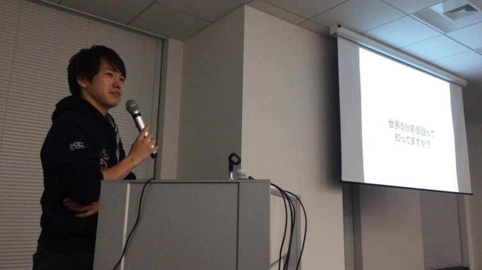
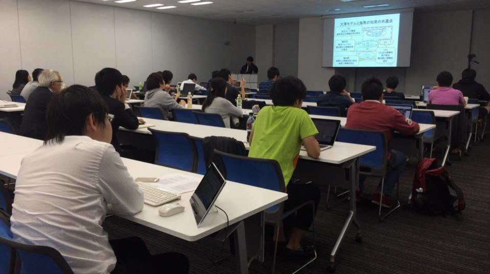
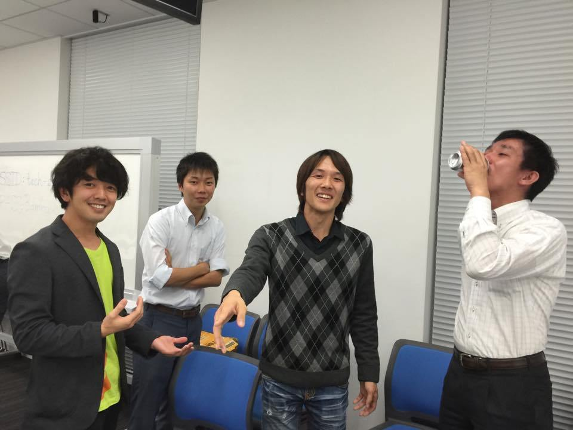

第10回 海馬と記憶モデルの展望
【神経科学勉強会のおしらせ】
神経科学勉強会を行います．
日時：2015年10月14日(水) 開場18:30 勉強会19:30~21:30（予定）
会場：株式会社ドワンゴ 14階セミナールーム (アクセス)
後援：株式会社ドワンゴ人工知能研究所
講演者：松岡佑磨（法政大学 3年生）
テーマ：海馬と記憶モデルの展望
講演概要(予定)：
- 海馬の生理学的な知見
- 主な海馬の機能
- 海馬の知見と取り入れた工学モデル
- 海馬の海馬モデルの今後の展望
- 議論 / 質疑応答
講演者コメント：
昨今の脳神経科学の分野の発展により，少しずつですが脳の構造と機能が解明されつつあります．
これに伴い，脳の中でも特に海馬の知見を活かした人工知能の研究に注目が集まっています．
しかしながら，汎用型人工知能の実現に関して海馬の知見は必要なのでしょうか．
今回の勉強会では，海馬の知見とこの知見を活かした記憶モデルについて説明し，
今後の汎用型人工知能の展望について議論していきたいと思います．
初学者ゆえに理解が不十分なこともあると思いますが，どうぞよろしくお願いします．
発表スライド
ニコニコ生放送
以下のURLで当日ご覧になれます.
全脳アーキテクチャ若手の会 勉強会「海馬と記憶モデルの展望」 – ニコニコ生放送
懇親会
当日，勉強会終了後，会場にて立食形式での懇親会を予定しております．
ご参加をご希望の方はFacebookでのイベントページの懇親会に関する投稿の方にコメントをいただくか，
Contactページよりその旨をお知らせくださいませ．


